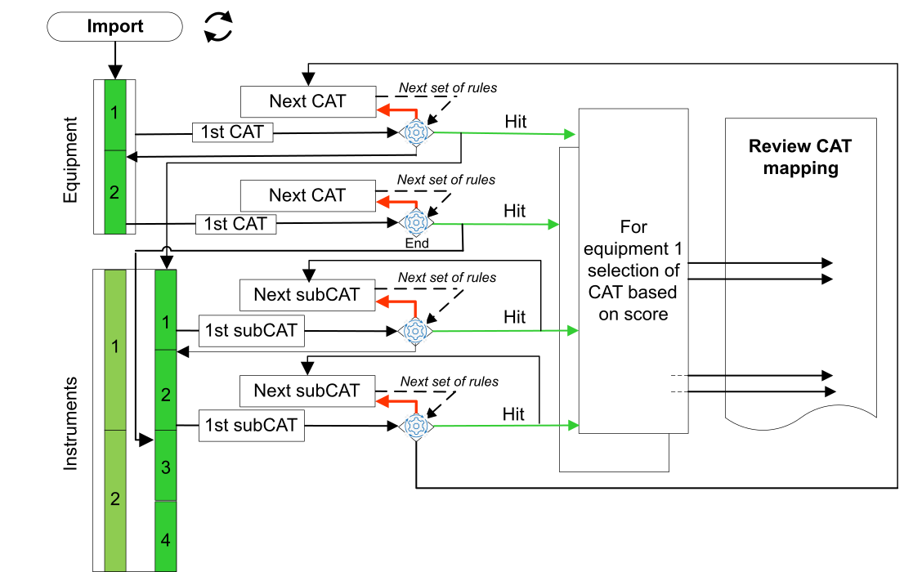

Auto-Mapping is the process of matching extracted engineering instances data from a selected engineering source with CAT present in the project. This done by applying the mapping rules defined for each CAT and identifying the first CAT fit for an engineering instance.
the outer loop goes through the various pieces of equipment
the middle loop scans the Solution alphabetically in search of a matching CAT
in case of success, an inner loop scans the related instruments trying to match a SubCAT of the CAT of interest
the innermost loop (not represented in the schema) goes through the set of rules in accordance with their priority.

The algorithm shows in the Review CAT mapping pane one CAT by piece of equipment among those preselected and one SubCAT.
|
Step |
Action |
|---|---|
|
1 |
The 1st step Import/Export Engineering data tab is open. You can navigate through tabs using the Back and Next links (the active one‘ number is highlighted in green). |
|
2 |
Select the data source of interest. |
|
3 |
If you have selected AVEVA Engineering or Compatible file, select:
Click Import. The button changes to Importing as long as the import is under way. If the source is valid, the Review CAT Mapping pane shows with a hierarchy. The CATs that are automapped show in the right column (prepended by the Main space name).
NOTE: With an Excel source, you can also export the file.
|
|
4 |
If you want to restart the workflow, close the Asset Link for Bulk Engineering tab and repeat the whole procedure. |